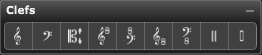

Palette Overview

The following describes each of the tools in the Clefs palette:
- Insert Treble Clef. Select this tool to insert a treble clef at the insertion point.
- Insert Bass Clef. Select this tool to insert a bass clef at the insertion point.
- Insert Movable C-Clef. Select this tool to insert a C-clef at the insertion point. It defaults to an alto clef (center line), though you can drag it up or down to create a tenor clef, mezzo-soprano clef, or soprano clef.
- Insert Neutral Clefs 1 & 2. Select either tool to insert a neutral clef at the insertion point. Neutral clefs notate instruments of indefinite pitch (such as drums).
- Insert Modern Tenor Clef. Select this tool to insert a modern tenor clef at the insertion point. Notes following a modern tenor clef sound one octave lower than written. This is particularly useful for the tenor voice.
- Insert 8va Bass Clef. Select this tool to insert an 8va bass clef at the insertion point. Notes following an 8va bass clef sound one octave lower than written. This is particularly useful for such transposing instruments as contra bassoon and double bass.
- Insert Modern Baritone Clef. Select this tool to insert a modern baritone clef at the insertion point. Notes following a modern baritone clef sound one octave higher than written. This is particularly useful for high bass parts that normally would not move to another clef (such as bass voice, baritone voice, and tuba).
- Insert Modern Piccolo Clef. Select this tool to insert a modern piccolo clef at the insertion point. Notes following a modern piccolo clef sound one octave higher than written. This is particularly useful for such high transposing instruments as piccolo and xylophone.
Clef Insertion Rules
When inserting clefs into a score you need to be aware of the following facts and conventions:
- You can not replace one type of clef with another by simply selecting a new clef and clicking the old clef. Rather, you must click the old clef with the Eraser cursor, then enter a new clef in its place.
- Exception: You can change the very first clef in the very first measure by clicking it with any clef tool.
- When a clef change is to occur at the beginning of a measure, you must insert the clef at the end of the preceding measure, before the barline.
- Exception: You can insert a clef change at the beginning of the very first measure because there is no measure prior to it.
- Clefs shown to the left of each staff are not clef changes, they are merely courtesy clefs that illustrate the clef last used in the previous measure. You cannot click these clefs to change them. Rather, you must insert a clef change at the end of the preceding measure (as mentioned above).
- Exception: You can change the very first clef in the very first measure by clicking it with any clef tool.
- You can insert new clefs in the middle of measures as well as at the ends.
- When you insert a new clef, Overture uses it to define the pitch of all notes on that staff until it comes across another inserted clef.
- When you insert a new clef, Overture always shifts the vertical positions of the notes that follow, so that they maintain their correct pitches.
Using the Clefs Palette
Use the Clefs palette to insert clefs onto staves. To use the Clefs palette:
- Select the type of clef you want from the Clefs palette.
- In the Score View, click where you desire the new clef.
Overture inserts the clef and automatically shifts the vertical position of any notes that follow it.
Using the Movable C-Clef
Overture lets you insert a movable C-clef that you can drag up or down on the staff. To use the movable C-clef:
- In the Clefs palette, click the movable C-clef tool to select it.
- In the Score View, press and hold the mouse at the desired point.
The C-clef will appear.
- While still holding the mouse button, drag the mouse up or down to change the position of middle C.
- Release the mouse when the movable C-clef is in the desired position.
Overture automatically shifts the vertical position of any notes that follow the inserted clef.